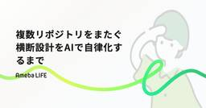

CyberAgent Developers Blog | サイバーエージェント デベロッパーズブログ
https://developers.cyberagent.co.jp/blog
サイバーエージェントのエンジニア・クリエイター・テクニカルクリエイターが執筆する公式ブログです。サイバーエージェントの技術情報を日々発信していきます。
フィード

複数リポジトリをまたぐ横断設計をAIで自律化するまで
CyberAgent Developers Blog | サイバーエージェント デベロッパーズブログ
はじめに こんにちは。AmebaLIFE事業本部エンジニアのsatominです。 この記事では、ビジ ...
17時間前

Google Cloud Workflowsを導入してABEMAの課金システムをリファクタリングした話 1
1
CyberAgent Developers Blog | サイバーエージェント デベロッパーズブログ
ABEMA バックエンドエンジニアの大真です。 ABEMAのサブスクリプションシステムをリファクタリ ...
17時間前

AAAI-2026 参加報告
CyberAgent Developers Blog | サイバーエージェント デベロッパーズブログ
1月に AAAI-2026（The 40th Annual AAAI Conference on A ...
7日前

Datadog MCPが使えなくても大丈夫！agent-skills × pup でAIによるインシデント調査を実現する
CyberAgent Developers Blog | サイバーエージェント デベロッパーズブログ
本記事は、Datadog agent-skillsとpupをGithub Actionsで実行し、自 ...
7日前
GitHub Commit Status を活用した柔軟な Approve 数管理
CyberAgent Developers Blog | サイバーエージェント デベロッパーズブログ
目次 この記事で学べること 想定読者 はじめに GitHub の Branch Protection ...
13日前
データサイエンティスト一年目が学ぶこと
CyberAgent Developers Blog | サイバーエージェント デベロッパーズブログ
はじめに こんにちは。メディア統括本部 Data Science Center（DSC）の土井 悠生 ...
18日前